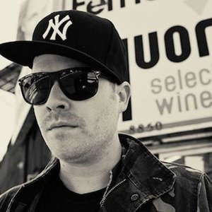
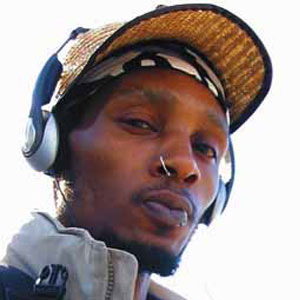
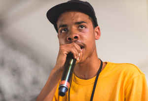

Underground Hip-Hop is a subgenre of hip-hop that surrounds any hip-hop artists that are outside of the mainstream. Many of these artists are independent and don't have a label or they belong to a label that doesn't have a mainstream audience. Many of them have lyrical content that is poltically driven or socially conscious. Some of it is also considered experimental in regards to the production. Below are some artists that fit into the underground hip-hop genre.
El-P

Jamie Meline AKA El-P is a rapper from Brooklyn, New York. He has been arguably the most well-known underground rapper. He is also a producer and has done production for several other underground rappers. In the 90's he was known for being in the rap group Company Flow. Most recently he has been a part of the rap duo Run the Jewels along with fellow rapper Killer Mike. His work with Run the Jewels has been his most successful yet, gaining a lot of critical acclaim.
Del the Funky Homosapien

Teren Jones AKA Del the Funky Homosapien is a rapper from Oakland, California. He's become popular in the underground scene dating back to the early 90's. Aside from his solo career, he was a part of Deltron 3030, who made one of the most well-known and popular underground albums of all time. A lot of his music is derived from west coast hip-hop. He is also the cousin of 50 Cent.
Earl Sweatshirt

Thebe Kgositsile AKA Earl Sweatshirt is a rapper from Los Angeles, California. He is known for being a member of Odd Future. He has gained a lot of success in the Internet community but not a lot of mainstream success which has kept him mainly underground. He's known for his very dark song topics and aggressive flow.